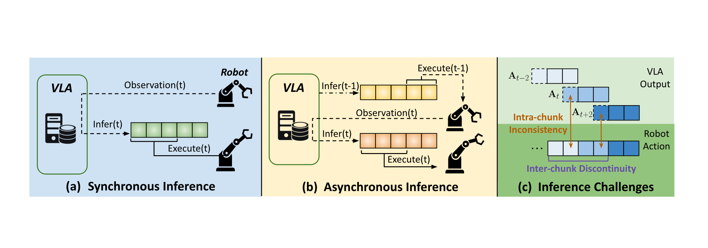
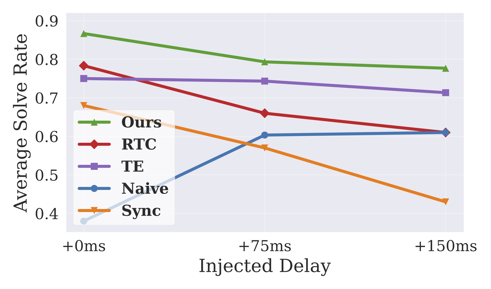

ICML 2025
Real-time execution is essential for cyber-physical systems such as robots. These systems operate in dynamic real-world environments where even small delays can undermine responsiveness and compromise policy performance. Asynchronous inference has recently emerged as a system-level paradigm for real-time robot manipulation, enabling the next action chunk to be predicted while the current one is being executed. While this approach achieves real-time responsiveness, naive integration often results in execution failures.
Previous methods attributed this failure to inter-chunk discontinuity and developed test-time algorithms to smooth chunk boundaries. In contrast, we identify another critical yet overlooked factor: intra-chunk inconsistency, where the robot's perception and the executed actions become misaligned.
To address this, we propose REMAC, which learns corrective adjustments on the pretrained policy through masked action chunking, enabling the learned policy to remain robust to behavioral deviations caused by intra-chunk mismatches. In addition, we adopt a prefix-preserving denoising process during inference to reinforce inter-chunk continuity. Our method introduces no additional inference latency while yielding more reliable policies for asynchronous inference. Extensive experiments in both simulation and real-world settings demonstrate that our method enables faster task completion, maintains robustness across varying delays, and achieves consistently higher success rates.

Illustration of inference paradigms. Arrowed lines of the same style indicate processes occurring simultaneously. (a) Synchronous inference: VLA inference and robot execution alternate sequentially. (b) Asynchronous inference: VLA inference runs concurrently with execution. (c) Although asynchronous inference enables real-time execution, it introduces two performance-degrading challenges: exacerbated inter-chunk discontinuity and intra-chunk inconsistency.
REMAC enables faster task completion and achieves consistently higher success rates. Videos at 1× speed.
Performance under different injected inference delays. 1× speed.
